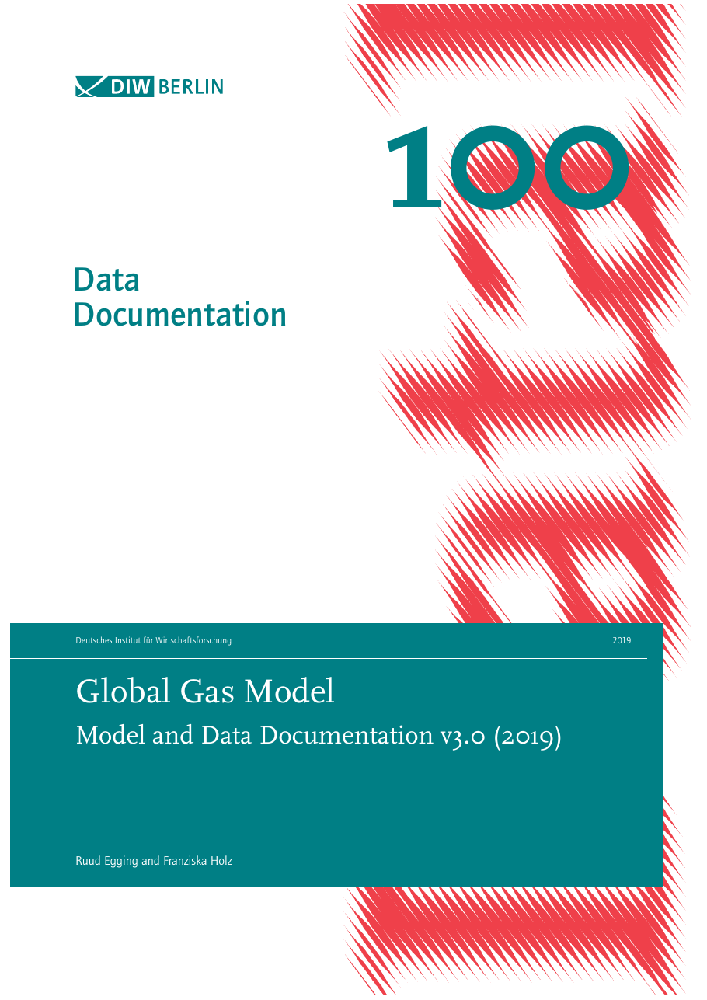
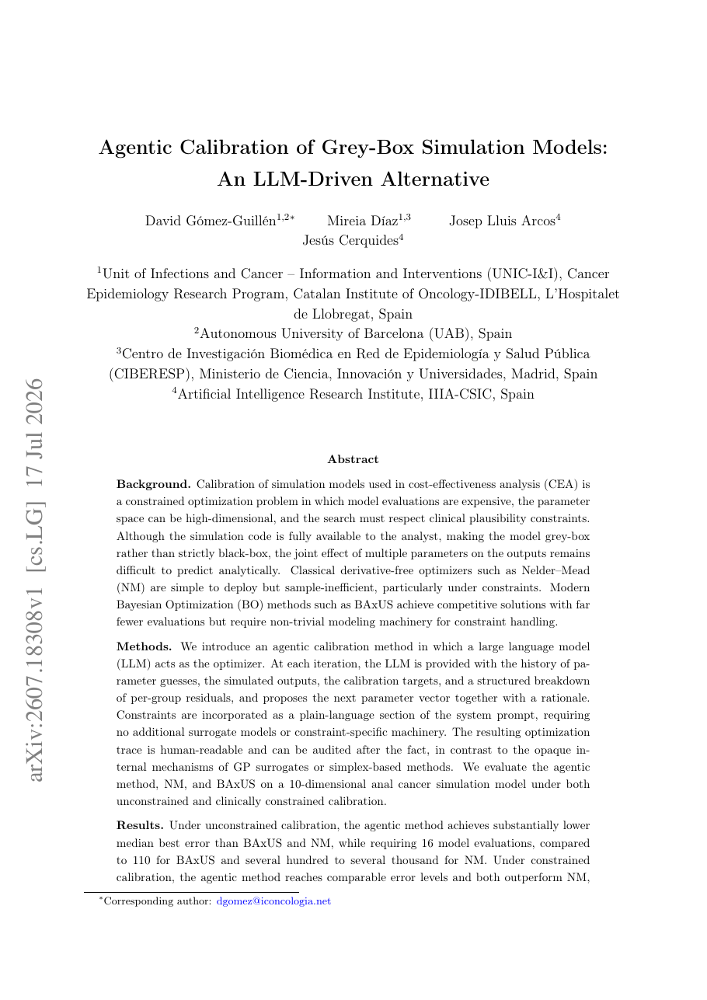
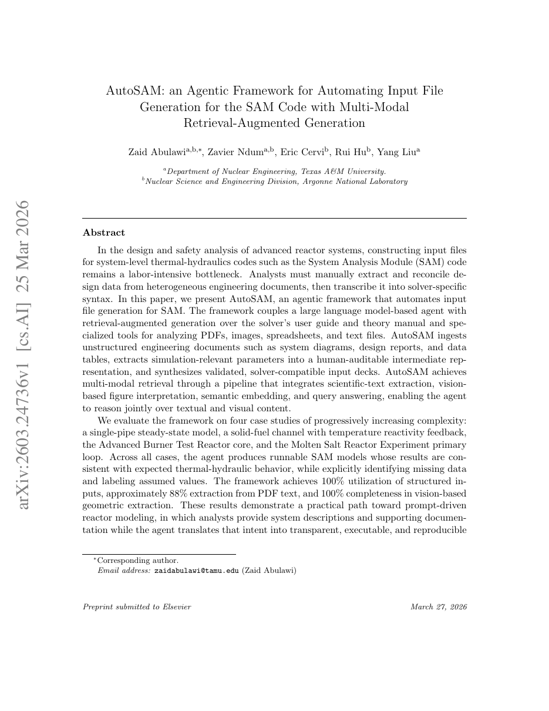
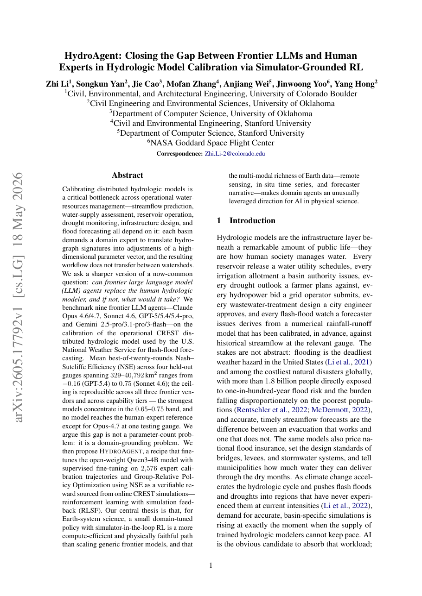
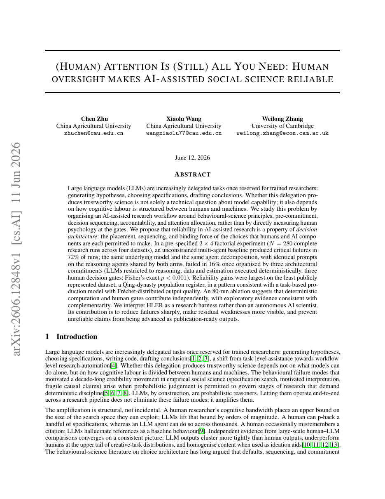

Where we are, five papers we find most relevant, and next steps
Jørgen Holt and Save Brautaset · 15 October 2026
Literature search done: 142 sources, each checked to exist. Writing chapter 2 starts now.

Paper 1 of 5 · GGM

Paper 2 of 5 · AI and calibration

Paper 3 of 5 · AI and model inputs

Paper 4 of 5 · The limits

Paper 5 of 5 · Humans in the loop
When would suit you?